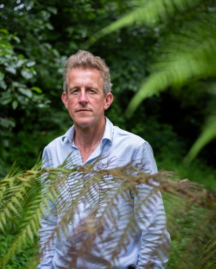
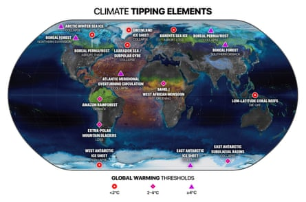
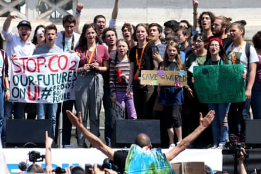

5-Tim-BComposite: TT/Shutterstock/Guardian Design
Timothy Lenton is a professor of climate change and Earth system science at the University of Exeter. He started working on tipping points in the 1990s, making him one of the first scientists in the world to study this form of planetary risk. In an upcoming book, Positive Tipping Points: How to Fix the Climate Crisis , he argues the Earth has entered an “unstable period” but humanity can still prevail if we can trigger positive social and economic tipping points to reverse the damage that has already been done. On 30 June, he will host a global conference on tipping points .
Humanity has failed to treat climate change as a risk assessment, says Timothy Lenton.Photograph: Abbie Trayler-Smith/The Guardian
How do you define a tipping point? A tipping point is where change becomes self-propelling within a system, meaning it will shift from one state to another. That can happen because the balance of feedback in the system switches from damping feedback to amplifying feedback. The result can look very rapid and irreversible.
How has our understanding of these risks changed? We first published a map of climate tipping elements in 2008, Since then, we have added much more than we have subtracted from that map. And, unfortunately, in the intervening 17 years, the evidence suggests we’re much closer to some of these tipping points than we thought.
Which tipping points might we have passed? Things are undoubtedly happening faster than anticipated. The tipping points of greatest concern include the West Antarctic ice sheet , where the loss of a significant chunk of the ice sheet is self-propelling, which could raise the world’s sea levels by about 1.2 metres. There is also the Greenland ice sheet, which is losing mass at an accelerating rate. Then we have the permafrost, parts of which are already passing localised tipping points – and that’s adding methane and carbon dioxide to the atmosphere. Then there’s the unprecedented bleaching and dieback of coral reefs , which hundreds of millions of people depend on for their livelihoods.
And which are close? There’s a tipping point in the circulation of the north Atlantic Ocean, when deep water stops forming in the middle of the subpolar gyre south-west of Greenland. That system seems quite volatile, and a tipping point there is like a small version of a bigger tipping point of the Atlantic meridional overturning circulation (Amoc), which studies suggest is at much greater risk than we thought even a few years ago. That in turn could trigger monsoon tipping points in west Africa and India. I’d also note the risk of tipping Amazon rainforest dieback from a mixture of climate change and direct human disruption. Unfortunately, I could reel off quite a few more.
Potential tipping points corresponding to the level of global heating.Photograph: climatetippingpoints.info
How accurate are the predictions? If anything, we have underestimated the risks. When we did our first assessment in 2008, we thought Greenland was close to a big tipping point. We haven’t changed that judgment, but we thought West Antarctica would need at least 3C of warming [above pre-industrial levels]. Unfortunately, everything that’s been observed since suggests we were way too optimistic. As a rule, the more we learn, the closer we think the tipping points are – and meanwhile we’ve been warming the planet up. It’s like running faster into a sea that is rising to drown us.
Why has it taken so long for the world to talk about these catastrophic threats? In the climate science community, we have tended to concentrate on assessing what’s the most likely thing to happen, but the more important question is: what’s the worst thing that could happen? That’s the difference between a scientific assessment and a risk assessment. I would argue we’ve not been treating climate change as a risk assessment.
That is also because a lot of well-funded entities have been systematically undermining the knowledge consensus on climate change, which has forced the scientific community to defend what’s in effect 19th-century physics. That hasn’t put us in a great position to emphasise tipping point risks, which inherently have more uncertainty around them.
The New York City skyline seen in a smokey sunrise in June 2023 as wildfires in Canada cast a haze across North America.Photograph: Gary Hershorn/Getty Images
Why do we need to talk about them now? Because tipping point risks are real and potentially existential. If we have a tipping point in the Atlantic Ocean – the so-called Amoc – we could lose more than half the area for growing staple crops worldwide. It would cause water security crises and severely disrupt the monsoons in west Africa and India, which would affect billions of people.
We have to level up to those risks, better understand them and how close they are, and what things we can do in response. Even if we can’t stop the events happening, we can do things that reduce the vulnerability of people exposed to the risks. That is why we are drawing attention to tipping points. This is not as a council of despair; on the contrary, it is more like a council of practicality. In terms of the upfront costs to decarbonise the global economy, it is a great investment for the return you get, which is lowering the risk of otherwise catastrophic outcomes.
It would help if the IPCC [the United Nations Intergovernmental Panel on Climate Change] took a more in-depth look at tipping points. A large number of countries wanted to see an IPCC special report on tipping points in this assessment cycle, but the IPCC said no. Instead there’s due to be a chapter in the next assessment report.
Is there an alternative? Yes. I and more than 200 other researchers have published a global tipping points report, and we’re writing another one for Cop30 , [the UN climate change summit which takes place in Brazil, in November]. We felt the risk was important to communicate and this is a timely moment. So we are trying to fill in the assessment gap in an accessible way. People are crying out for that.
I understand the global tipping points conference will also look at positive tipping points in technology, economics and politics? Yes. [There are some] more optimistic scenarios; the impacts of wind power and photovoltaic innovation, or the knock-on effects of campaigning by Greta Thunberg and others. There are also policy feedbacks that could create a change in the landscape in a good way, where you start a policy path towards the renewable energy revolution that’s very hard to reverse. That is arguably what the architects of the German feed-in tariffs for renewables managed to do. They made it hard for the doubters to change course even after a change of government.
The environmental protests led by Greta Thunberg (centre) when she was a school pupil had a huge knock-on effect, says Lenton.Photograph: Franco Origlia/Getty Images
Has renewable energy reached a positive tipping point? Yes, our analysis suggests that solar photovoltaic power is now in a phase of self-propelling global uptake with exponential growth of installed generating capacity, doubling every two years or less. Factoring in the cost of battery storage, solar is already the cheapest source of new power in most of the world, and for every doubling of installed capacity its price drops by nearly a quarter. This is rapidly making solar power the cheapest source of electricity ever, which brings many benefits, including access to electricity for the roughly 700 million people who don’t currently have it.
And electric vehicles? Yes, the price of batteries plummeted nearly tenfold in a decade as the range you can get from a given mass of battery increased by nearly a factor of three. This has brought China and several European markets to the tipping point where adoption of EVs is self-propelling: the more EVs that get bought, the better and the cheaper they get, encouraging further adoption. The US is lagging behind, but the global south is starting to reap the benefits of electrifying mobility, as it is much cheaper to run an electric rickshaw in India or an electric motorbike taxi in east Africa than their fossil-fuelled equivalents.
Any other examples of potential positive tipping points? I’m working on regenerative nature. We already see cases where degraded ecosystems have been tipped back into a better state – for example, when wolves were reintroduced to Yellowstone National Park and started preying on elk, it triggered abrupt vegetation recovery, or when sea otters returned to north Pacific coastal ecosystems and started feasting on sea urchins it tipped the recovery of kelp forests. We also see social tipping points that are nature-positive, where community conservation initiatives, like locally managed marine protected areas, spread rapidly and widely among and across societies.
Can you explain cascading feedbacks? In all complex systems – such as the climate and the economy – if you can tip one thing, it can have consequences for other bits of the system. If you tip one part of the system it can make tipping another part of the system more likely. For example, if you’ve suffered a medical shock it can have knock-on effects on other parts of the body. In the climate, these causal connections can be quite significant and strong. In Earth’s history, when there were tipping points in the overturning circulation of the Atlantic Ocean, that tipped major shifts in the tropical monsoons of west Africa and India.
In the economy, a cascade can be more positive. For example, an investment in renewable energy can bring forward a tipping point in other sectors. It basically means renewables are making electricity cheaper than it has ever been, and that incentivises electrifying mobility, like cars and trucks and buses, or electrifying heating in homes. At the same time, batteries get cheaper because of economies of scale, which then helps to balance renewable electricity supply and demand. So feedbacks between sectors of the economy can create tipping points that reinforce each other. We’ve recently mapped out a bunch of positive tipping cascades that could help accelerate change to zero greenhouse gas emissions.
What should the world do at Cop30 in Belém to address tipping points? We need policymakers to implement policies that bring forward the positive tipping points we need to stop greenhouse gas emissions and prevent the bad climate tipping points. If the EU and China were to coordinate, it could be enough to shift the balance towards clean green alternatives. Even with Trump in the United States, the beauty of tipping points is you don’t need everybody, you typically only need a fifth to tip to the new alternative and then you get to a situation where everybody else is compelled to follow.
Tipping points: on the edge? – a series on our future

Composite: Getty / Guardian Design
Tipping points – in the Amazon, Antarctic, coral reefs and more – could cause fundamental parts of the Earth system to change dramatically, irreversibly and with devastating effects. Here, we ask the experts about the latest science – and how it makes them feel.
Read more